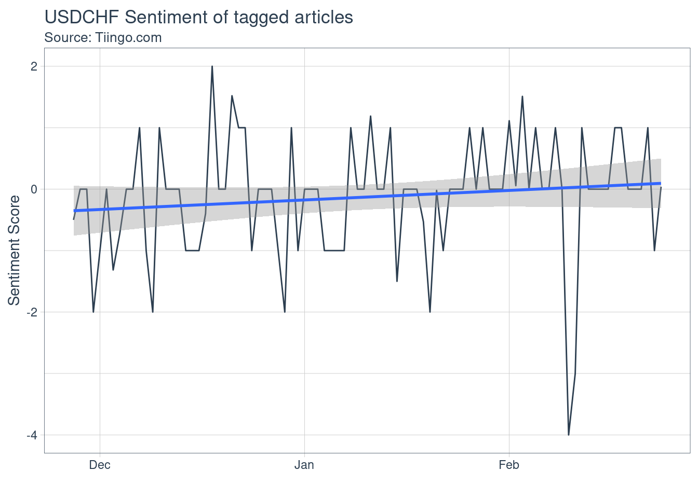
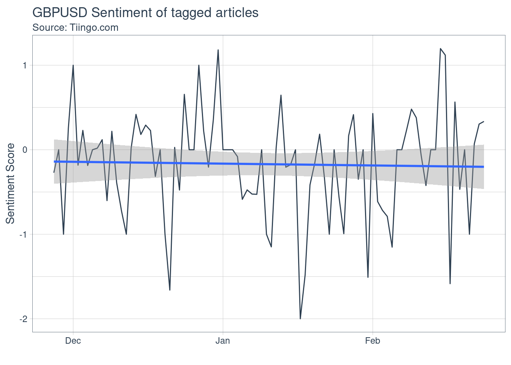
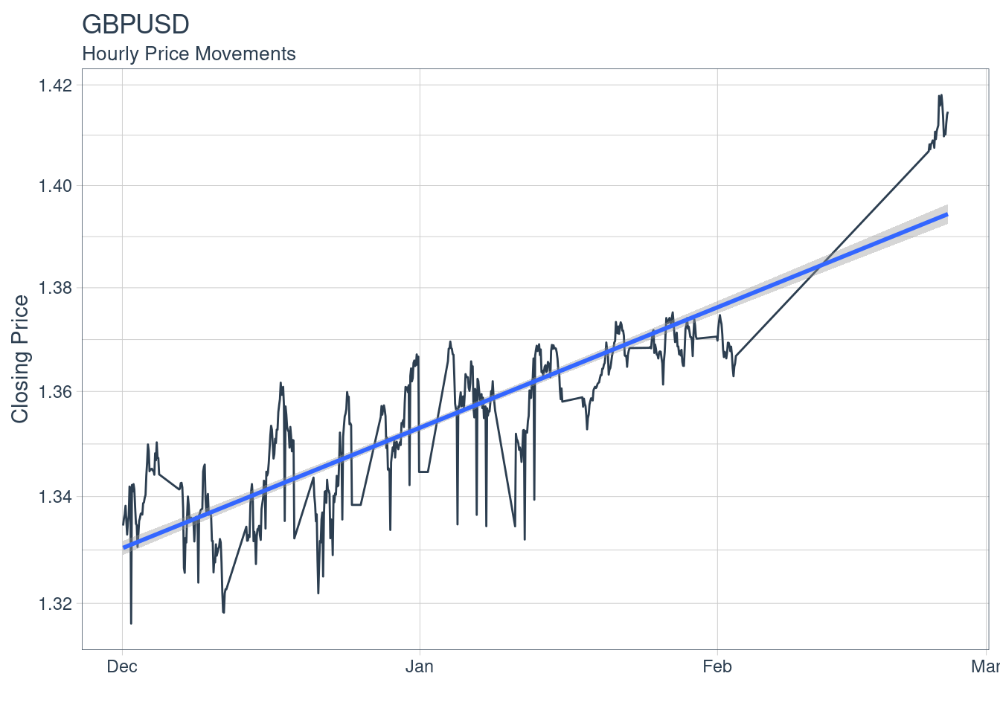
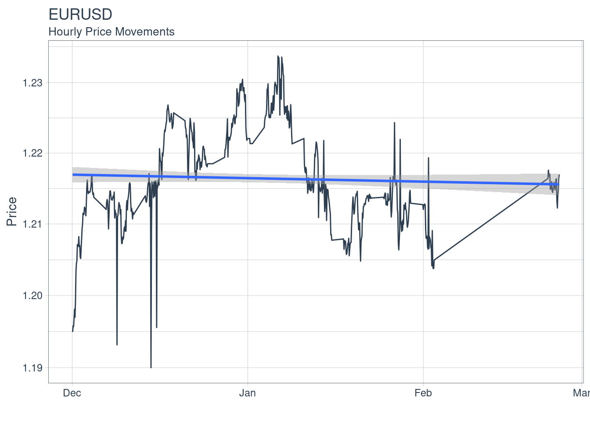
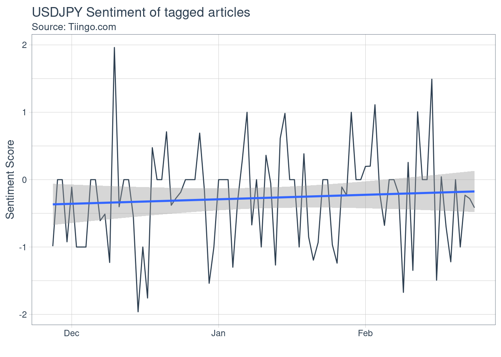
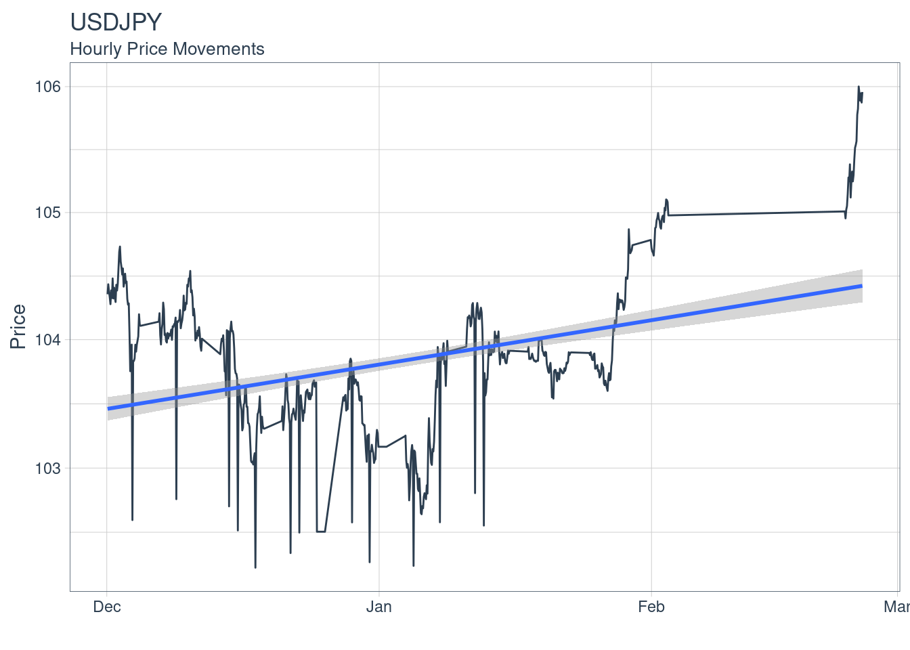

FX and Collateral Analyst Daily Morning Report
Mandip Mistry
21/02/2021
Introduction
This is an R Markdown document. This document is automated and meant to provide meaningful start of day report for and FX and Collateral Analyst. This was created over a couple of hours and is intended to demonstrate my ability to rapidly prototype reports using R and freely available data.
Sentiment Charts
Using a lexicon of positive and negative words identified by Loughran and Macdonald we extract these charged words to create a sentiment score. The sentiment score over time of the FX pairs were derived using the tiingo.com news feed and Loughran Macdonald Lexicon. Tiingo’s news feed incorporates financial news sites and financial blogs - including those of small-time reputable bloggers, and tag them using algos they have been developing for over a decade. The idea behind this chart is the Analyst would monitor the feed looking for large anomalies as sign of a large prices movements.
Hourly Price Charts
Using hourly tick data for the FX pairs from IEX the Analyst would monitor these prices at a granularity he/she sees fit. The chart and the associated code is meant as a jumping off point to preform deeper dives, add additional explanatory variable to regress against.
Correlation Chart
Using the daily returns of the FX prices correlation is calculate and plotted. The Analyst would use this graph to monitor the correlation. Some pairs are more obviously correlated however if correlation on those pairs start to move in the opposite direction an oppurtunity could present itself.
Correlation Amongst Pairs
The top right are the absolute correlation numbers across the pairs
Histogram of returns along the diagonals
Bottom left are the scatter plots for each pair
## Warning: Non-numeric columns being dropped: date
USD/CHF

GBP/USD


EUR/USD

USD/JPY

